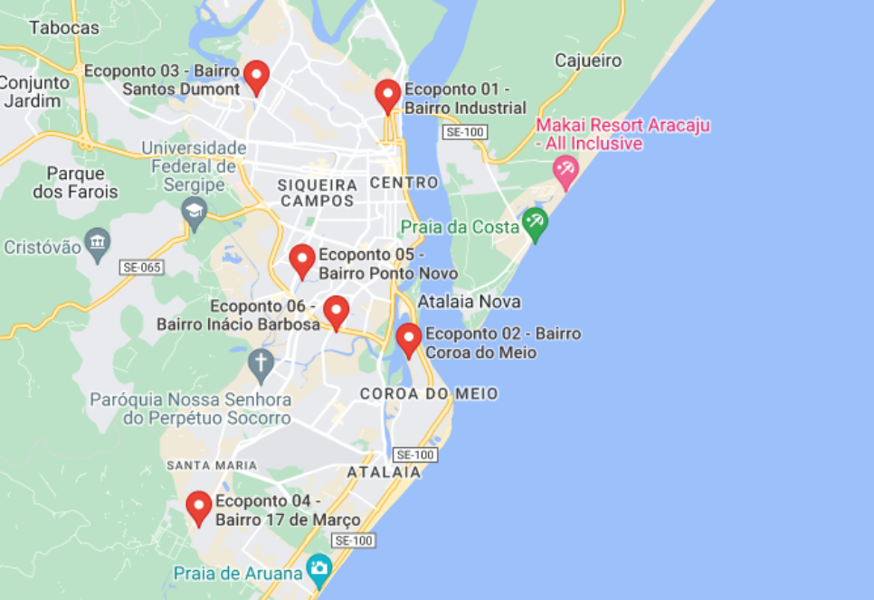

Aracaju dispõe de seis Estações de Entrega Voluntária de Resíduos Sólidos, conhecidos como Ecopontos. Nesses locais, os aracajuanos podem descartar móveis velhos, eletrônicos, restos de construção civil, materiais recicláveis e reutilizáveis, entre outros resíduos volumosos.
Os ecopontos funcionam de segunda a sexta-feira, das 7h às 12h e das 13h às 17h. O recolhimento do material é gratuito. Os resíduos entregues nos EcoPontos são encaminhados à cooperativa CARE.